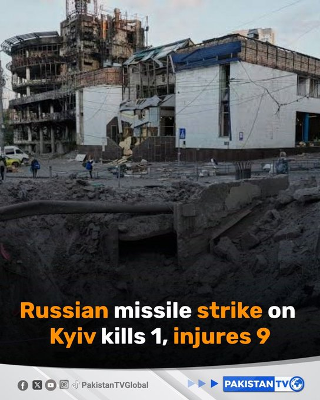
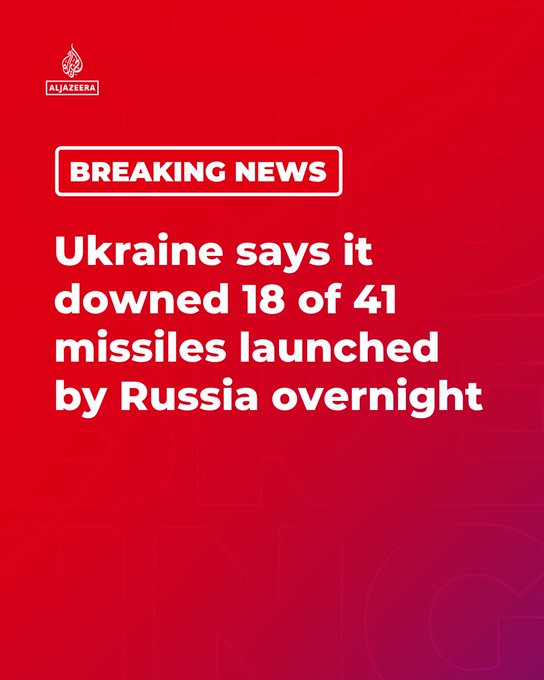
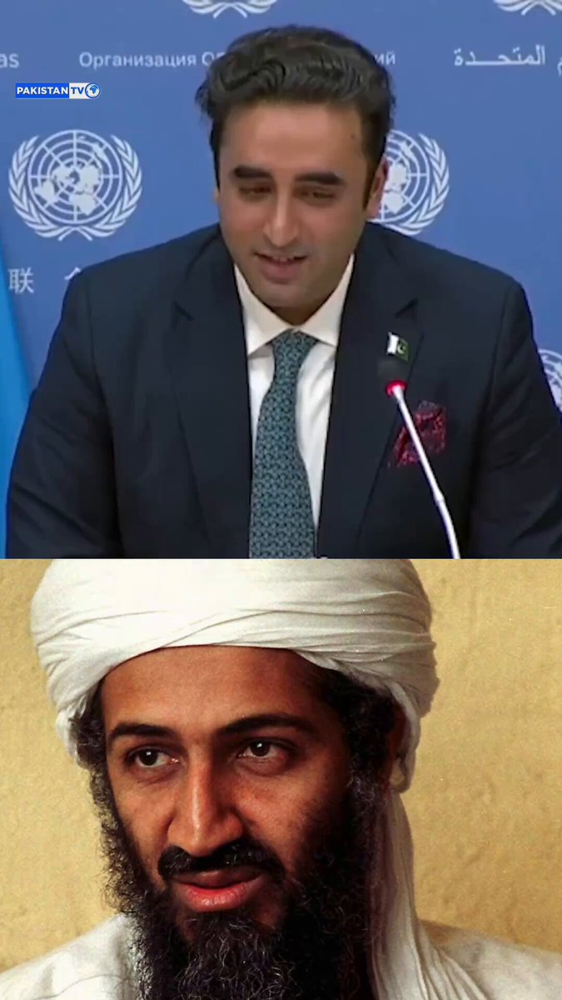
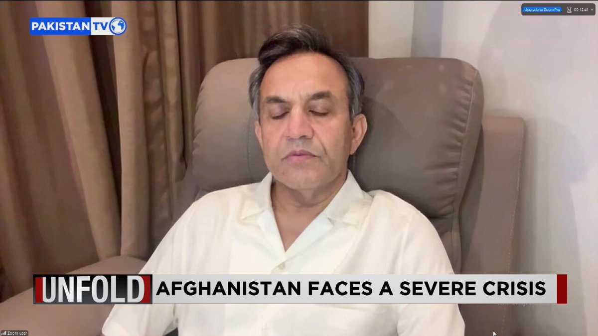
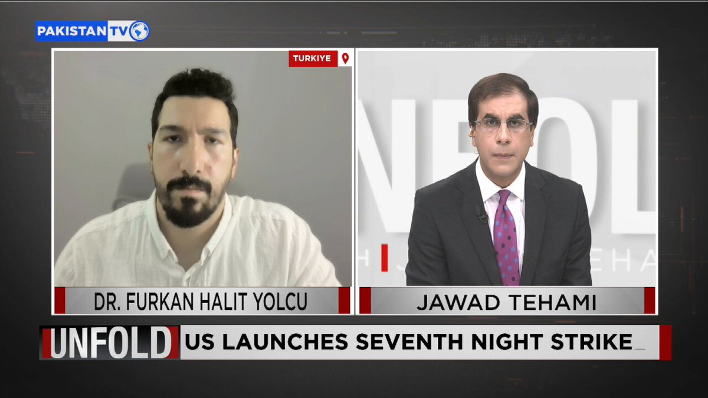

@CBSNews
📝 原文: Target recalls over 200,000 children's sandals after pearls detach, creating choking risk
🇨🇳 译文: Target 召回超过 20 万双儿童凉鞋，因珍珠脱落造成窒息风险

🕒 2026-07-19T08:00:00+00:00
| 来源 | 旧窗口内数量 | 本次新增 | 本次淘汰 | 当前窗口内共有 |
|---|---|---|---|---|
| 推文 + Dawn 新闻 | 0 | 36 | 0 | 36 |
| ARY News | 0 | 0 | 0 | 0 |
注：淘汰数 = 旧窗口内数量 + 本次新增 - 当前窗口内共有











暂无文章。